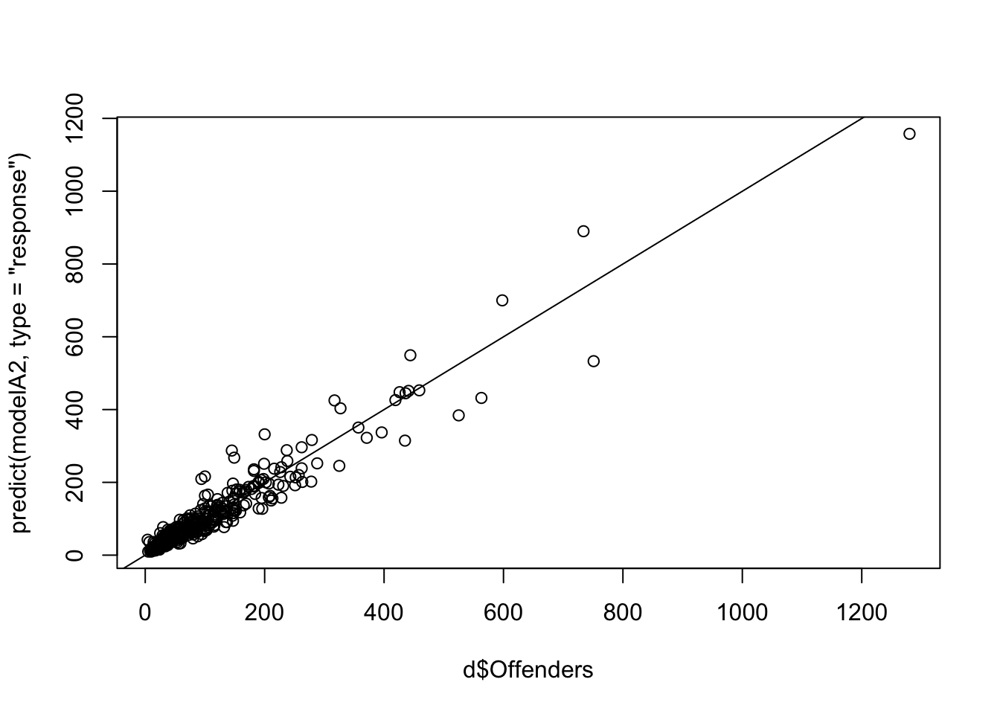
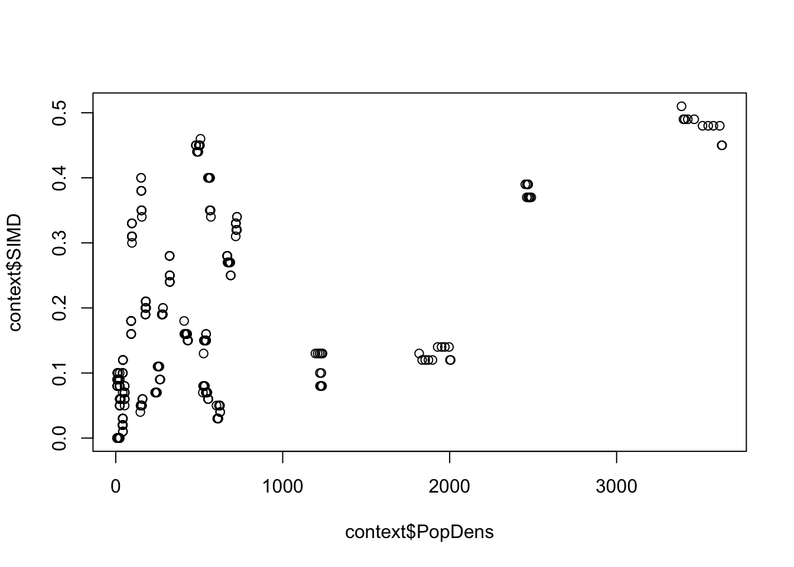
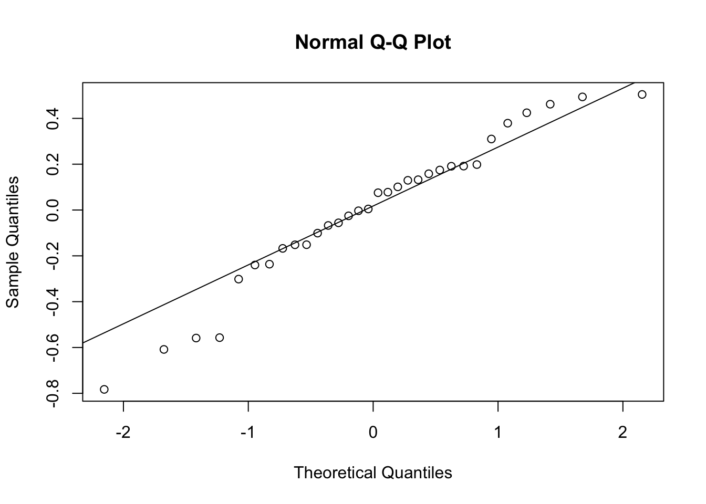
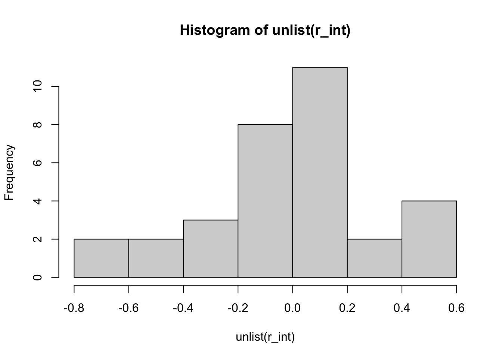
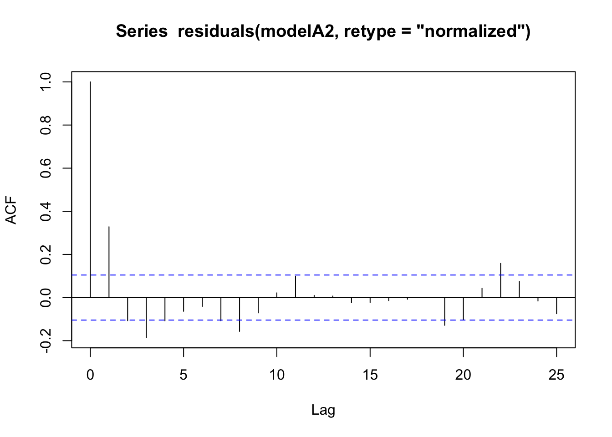
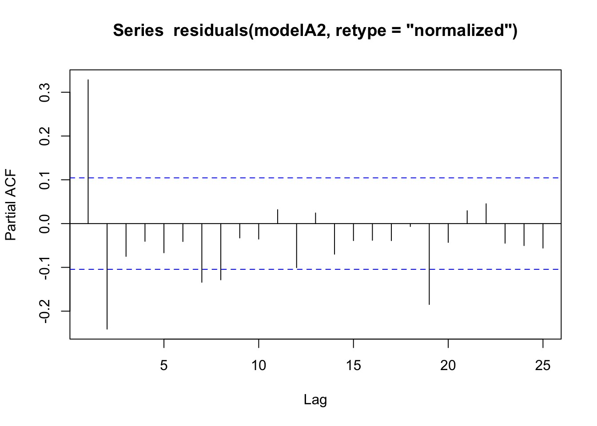

1.5 PBtest 4.231913 NA 0.1474704
Plot of predicted values vs observed values - Good.
plot(d$Offenders, predict(modelA2, type="response"))
abline(0,1)
## Check dispersion for best model (or full model) - only applicable to poisson/neg binom
# overdisp_fun(modelA2) # ratio=0.9, so okay
### Check for multicollinearity in the explanatory variables
##Check for correlation of SIMD and POP dens
plot(context$PopDens, context$SIMD)
cor(context$PopDens, context$SIMD) ##r=.547 ## [1] 0.5472664## Confirm levels of correlation are not problematic through inspection of VIF (variance inflation factors)
car::vif(modelA2) ## All non-interaction terms under 3, indicating levels of correlation are not problematic.## GVIF Df GVIF^(1/(2*Df))
## Int_level 1.401894 2 1.088125
## pre_or_post 5.823416 1 2.413176
## Year2 7.261942 1 2.694799
## covid 1.910853 1 1.382336
## Coterminous 1.209348 1 1.099704
## SIMD 1.739639 1 1.318954
## PopDens 1.450657 1 1.204432
## Int_level:pre_or_post 2.688646 2 1.280511
## pre_or_post:Year2 6.447831 1 2.539258## Check for normality of random effects
r_int<- ranef(modelA2)$LA
qqnorm(unlist(r_int))
qqline(unlist(r_int))
hist(unlist(r_int))
shapiro.test(unlist(r_int)) ##
## Shapiro-Wilk normality test
##
## data: unlist(r_int)
## W = 0.95697, p-value = 0.2265## Assumption okay. Shapiro test p-value > 0.05 (p=.21), implying that the distribution of the random effects are
## not significantly different from normal distribution.
## Check for any residual autocorrelation
acf(residuals(modelA2, retype="normalized")) #Fine
pacf(residuals(modelA2, retype="normalized")) #Fine
See Benjamini (1995) paper for FDR.